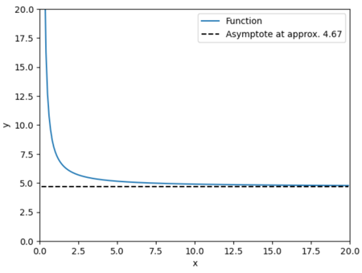

Module 3: Kinematics and Conservation of Mass#
The exercises in this module range from lecture 10 to lecture 12.
Global variables:
Problems for Lecture 11 – Fluid Kinematics#
Question 1 (*)#
The acceleration in the x direction for a two-dimensional velocity field is given by: \(𝑎_𝑥 = \frac {\partial 𝑢}{\partial 𝑡} + 𝑢\frac {\partial 𝑢}{\partial 𝑥} + 𝑣\frac {\partial 𝑢}{\partial 𝑦}\)
Explain the physical meaning of the following terms in this equation, and the type of flow for which they would be equal to zero
a) \(\frac {\partial 𝑢}{\partial 𝑡}\)
b) \(𝑣\frac {\partial 𝑢}{\partial 𝑦}\)
Question 1 (a)
Solution
This is the local acceleration in the x direction, representing the time rate of change of the velocity at a given location within the flow. It would be zero in a steady flow
Question 1 (b)
Solution
This is the convective acceleration in the x direction, calculated due to velocity gradients in the y direction, i.e. how fast we’re moving in the y direction and the rate of change of the u velocity in this direction. It would be zero in a uniform flow, as there would be no velocity gradient in any direction
Question 2 (*)[R]#
The velocity field for a given flow is equal to \((u,v)=(4x,-8xy)\)
a) Calculate the local acceleration in the 𝑥 and 𝑦 directions
b) Calculate the convective acceleration in the 𝑥 and 𝑦 directions
c) Calculate the magnitude of the fluid acceleration at the point (𝑥, 𝑦) = (4,3)
Answer
a) {\(\frac {\partial 𝑢}{\partial 𝑡}\), \(\frac {\partial v}{\partial 𝑡}\)}
b) {\(16x\) , -\(32xy +64x^2y\)}
c) {\(2688.8 𝑚/𝑠^2\)}
Question 2 (a)
Hint
The local acceleration is:
Solution
Show code cell outputs
Show code cell outputs
The local acceleration is zero in both 𝑥 and 𝑦 directions.
Question 2 (b)
Hint
The acceleration in x:
The acceleration in y:
Solution
Show code cell outputs
Replacing these partial differences in the acceleration equation we have the following:
Question 2 (c)
Hint
The magnitud of the fluid acceleration is:
Solution
Show code cell outputs
Question 3 (*)#
Water accelerates as it passes through a nozzle, such that the velocity of fluid particles passing through the centre of the nozzle (in the x direction only) is given by \(𝑢 = (200𝑥^3 + 10𝑡^2)\), where 𝑢 is in 𝑚/𝑠, 𝑥 is in 𝑚 and 𝑡 is in 𝑠. Determine the velocity and acceleration of a particle located at 𝑥 = 0.1 𝑚 when 𝑡 = 0.2 𝑠.
Answer
{ \(0.6 𝑚/𝑠\), \(7.6 𝑚/𝑠^2\)}
Hint
The velocity can be calculated using the equation and replacing the values of 𝑥 and 𝑡
The acceleration is calculated with the following equation
Solution
Show code cell outputs
Replacing the partial differences in the acceleration equation we have the following:
Then replacing the velocity equation 𝑢 in the acceleration equation we have:
Show code cell outputs
Question 4 (*)[R]#
A flow field has velocity components of \(𝑢 = (3𝑥 + 2𝑡^2)\) and \(𝑣 = (2𝑦^3 + 10𝑡)\), where 𝑥 and 𝑦 are in 𝑚, 𝑡 is in 𝑠 and both velocity components are in 𝑚/𝑠. Determine the magnitudes of the local and convective accelerations of a particle at the point 𝑥 = 3 𝑚, 𝑦 = 1 𝑚 at the time 𝑡 = 2 𝑠.
Answer
{\(12.81 𝑚/𝑠^2\),\( 141. 51 𝑚/𝑠^2\)}
Hint
For the local acceleration we have the following equations:
For the convective acceleration we have the following equations:
The magnitud of the fluid acceleration is:
Solution
Show code cell outputs
Show code cell outputs
Question 5 (*)#
A steady fluid flow has velocity components \(𝑢 = (5𝑦^2 − 𝑥)\) and \(𝑣 = (4𝑥^2)\), where 𝑥 and 𝑦 are in 𝑚 and both velocity components are in 𝑚/𝑠. Determine the velocity and acceleration of a particle passing through the point (𝑥, 𝑦) = (2𝑚, 1𝑚)
Answer
{\(16.3 m/s\) (magnitude), \(164.2 m/s^2\) (magnitude)}
Hint
The velocity component can be calculated using the equation and replacing the values of 𝑥 and y
The acceleration is calculated with the following equations
Solution
Show code cell outputs
For \(a_x\) the partial differences are:
\(\frac {\partial 𝑢}{\partial 𝑡} = 0\)
\(\frac {\partial 𝑢}{\partial 𝑥}= -1\)
\(\frac {\partial 𝑢}{\partial 𝑦} = 10y\)
Replacing these partial differences in the acceleration equation we have the following:
Then replacing the velocity equation 𝑢 and 𝑣 in the acceleration equation we have:
The same process is developed for \(𝑎_𝑦\)
For \(a_y\) the partial differences are:
\(\frac {\partial 𝑣}{\partial 𝑡} = 0\)
\(\frac {\partial 𝑣}{\partial 𝑥}= 8x\)
\(\frac {\partial 𝑣}{\partial 𝑦} = 0\)
Replacing the velocities we have:
Show code cell outputs
Question 6 (**)[R]#
State whether the following velocity fields are steady or unsteady, and determine the acceleration in the 𝑥, 𝑦, and 𝑧 directions:
a) \(𝑽 = (𝑢, 𝑣, 𝑤) = (8𝑥𝑦𝑧, −2𝑦^2𝑧, −2𝑦𝑧^2 + 4𝑥)\)
b) \(𝑽 = (𝑢, 𝑣, 𝑤) = (9x, -13y+3z^3, 2z^2-t)\)
c) \(𝑽 = (𝑢, 𝑣, 𝑤) = (\frac{2x}{y^2}, \frac{2}{y}, 3z)\)
Answer
a) {\(32xy^2z^2+32x^2y\), \(12y^3z^2\), \(16xyz+12y^2z^3\)}
b) {\(81x\), \(169y-39z^3+18z^4-9z^2t\), \(-1+8z^3-4zt\)}
c) {\(\frac{-4x}{y^4}\), \(\frac{-4}{y^3}\), \(9z\)}
Question 6 (a)
Hint
It is steady if:
The aceleration in x:
The aceleration in y:
The aceleration in z:
Solution
Show code cell outputs
Steady
The aceleration in x:
The aceleration in y:
The aceleration in z:
Question 6 (b)
Solution
Show code cell outputs
Unsteady
The aceleration in x:
The aceleration in y:
The aceleration in z:
Question 6 (c)
Solution
Show code cell outputs
Steady
The aceleration in x:
The aceleration in y:
The aceleration in z:
Question 7 (*)#
Air flows through a horizontal duct with a velocity of \(𝑢 = (6𝑡^2 + 5)\), where 𝑡 is in seconds and 𝑢 is in 𝑚/𝑠. Determine the acceleration of the flow when 𝑡 = 2 𝑠, and classify the flow in terms of its uniformity and steadiness.
Answer
\(24 m/s^2\)
Hint
The acceleration is calculated with the following equations
Solution
Show code cell outputs
The acceleration is calculated with the following equations
For \(a_x\) the partial differences are:
\(\frac {\partial 𝑢}{\partial 𝑡} = 12t\)
\(\frac {\partial 𝑢}{\partial 𝑥}= 0\)
\(\frac {\partial 𝑢}{\partial 𝑦} = 0\)
Replacing these partial differences in the acceleration equation we have the following:
Considering this equation for acceleration, the flow is unsteady because there is a local component of the acceleration and is uniform because there is no convective acceleration
Show code cell outputs
Question 8(**)#
A flow field has the components \((𝑢, 𝑣) = (2𝑥^2, 8𝑦)\) in 𝑚/𝑠, where 𝑥 and 𝑦 are in 𝑚. Determine the equation of the streamline passing through the point (2𝑚, 3𝑚)
Answer
\(ln(y)+4x^{-1}-3.1=0\)
Hint
To determine the equation of the streamline the following equation should be used:
Solution
Show code cell outputs
The equation of the streamline can be calculated as:
Solving for \(C\) and replacing \(y\) and \(x\) we can calculate \(C\):
Therefore, the equation of the streamline passing through the point is:
Question 9 (**)#
A fluid has velocity components of \(𝑢 = (5𝑦^2)\) and 𝑣 = (4𝑥 − 1), where 𝑥 and 𝑦are in 𝑚 and the velocity components are in 𝑚/𝑠. Determine the equation of the streamline passing through the point (𝑥, 𝑦) = (1𝑚, 1𝑚).
Answer
\(\frac {5y^3}{3}- 2x^2+x-\frac {2}{3}=0\)
Hint
To determine the equation of the streamline the following equation should be used:
Solution
Show code cell outputs
Organizing the equation we have:
Replacing the (x,y) values in the equation to calculate C and then replace that value in the equation
Question 10 (**)[R]#
The velocity of a flow field is defined by \((𝑢, 𝑣) = (-\frac{y}{4},\frac{x}{9})\) 𝑚/𝑠, where 𝑥 and 𝑦 are in 𝑚.
a) Determine the magnitude of the velocity and acceleration of a particle that passes through the point (𝑥, 𝑦) = (3𝑚, 2𝑚).
b) Find the equation of the streamline passing through this point.
Answer
\(a) \; 0.6 \; m/s, \; 0.10 \; m/s^2\)
\(b) \frac{9y^2}{2}+2x^2-36=0\)
Question 10 (a)
Hint
For the velocity we replace \(x\) and \(y\) in the given velocity equations:
For the acceleration, we have the following equations:
Solution
Show code cell outputs
For the velocity we replace \(x\) and \(y\) in the given velocity equations:
For the acceleration, we have the following equations:
And the magnitude for the velocity and the acceleration can be calculated as:
Show code cell outputs
Question 10 (b)
Hint
To determine the equation of the streamline the following equation should be used:
Solution
Show code cell outputs
The equation of the streamline can be calculated as:
Solving for \(C\) and replacing \(y\) and \(x\) we can calculate \(C\):
Therefore, the equation of the streamline passing through the point is:
Question 11 (**)#
If a velocity field is defined by \((𝑢, 𝑣) = (2𝑥^2, −𝑦)\), where 𝑥 and 𝑦 are in 𝑚 and 𝑢 and 𝑣 are in 𝑚/𝑠, determine the equation of the streamline that passes through the point (𝑥, 𝑦) = (2𝑚, 6𝑚). Sketch the streamline for 𝑥 > 0.
Answer
\(ln (y)-\frac {1}{2x}-1.54=0\)
Hint
To determine the equation of the streamline the following equation should be used:
Solution
Show code cell outputs
Organizing the equation we have:
Replacing the (x,y) values in the equation to calculate C and then replacet that value in the equation
Show code cell outputs
